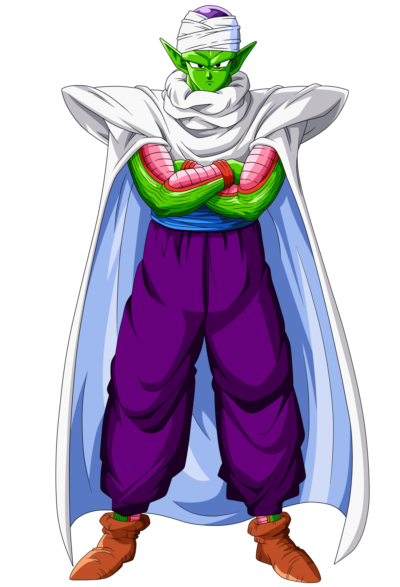

 llamado Piccoro Daimaku en el doblaje mexicano y simplemente Piccolo en el español es un personaje de ficción de la serie de manga y anime Dragon Ball.
En la saga de los saiyajin, durante el enfrentamiento con Vegeta y Nappa, se entera de que su raza de origen son los namekusei, que habitan en el planeta Namek. Después de haber muerto y tras entrenar en el otro mundo, Piccolo pide a Kaiosama que lo transporte a su planeta de origen.